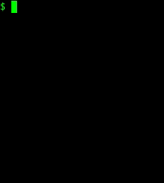

Exercici 32_44. La pilota que rebota
Exercici 32_44. La pilota que rebota
Context
Carpeta de lliurament:
32_44_pilota_rebota/Continguts relacionats: Mutabilitat
Com lliurar-lo: instruccions
[☆] Exercici amb dificultat addicional
[✓] Exercici amb autoavaluació
Enunciat
Ha arribat el moment de la tan esperada actualització del joc de la pilota.
Inicialment la pilota semblarà que es comporta com a la versió anterior.
La diferència apareix quan arriba a la darrera fila. En aquesta versió, en comptes de tornar a la primera, rebota! És a dir, passa a la fila anterior i canvia el sentit del moviment.
Veiem l'aspecte final de l'execució:
{kind=link}
Com pots veure, cada cop que toca una cantonada, rebota.
Per poder realitzar aquesta actualització, ens trobem en la necessitat de guardar no només la posició (fila i columna) sinó també l'increment (de fila i columna)
Inicialment l'increment és de 1 fila i 1 columna.
Així, quan estem en la primera posició (0, 0), la següent posició passa a ser (0 + 1, 0 + 1).
En el moment en que la pilota arriba a la darrera fila, l'increment de fila passa a ser negatiu.
És a dir, suposant que la darrera fila és la 8, en arribar tindrem la
posició (8, 8). La següent posició hauria de ser la (9, 9) però ja surt
del camp. Així que voldrem la (7, 9). Com que ara l'increment de les
files serà negatiu, després de (7, 9) tocarà (6, 10)
Et recomano que et facis uns quants dibuixos per sentir que acabes d'entendre com va.
La insuportable immutabilitat del int
En la versió anterior del joc, resolíem
el càlcul de la següent posició amb les funcions pures seguentFila() i
seguentCol() però ara ja no és tan fàcil.
Ara la següent posició depen del sentit del moviment. Això és la part fàcil ja que el sentit del moviment l'estem codificant amb el concepte d'increment. Quan l'increment és positiu, la pilota es mou cap a files/columnes més grans (a baix/a la dreta) i quan és negatiu, es desplaça cap a dalt/ a l'esquerra.
La part més difícil d'aquest punt està en que ara ens cal també saber si cal canviar aquest sentit del moviment perquè la pilota ha arribat a un dels límits (parets)
El que ens interessaria tenir és un mòdul seguentPosicio(int fila, int
col, int incrementFila, int incrementColumna) que en ser cridat
modifiqués els paràmetres convenientment. Malauradament, Java no ens
permet crear mòduls que modifiquin paràmetres enters. Enters no, però
arrays…
Per solucionar aquest problema crearem dos arrays nous:
int[] posicio = new int[2]; // fila, columna
int[] increment = new int[2]; // increment de la fila, increment de la columna
D'aquesta manera podem definir el procediment seguentPosicio(int[]
posicio, int[] increment) que realitzarà els canvis pertinents allà on
toqui.
Com que no volem estar preocupant-nos de si era el 0 o el 1 cada
cop que vulguem extreure la fila o la columna de posicio, crearem uns
quants mòduls auxiliars. Seran molt fàcils de construir i deixaran el
nostre codi molt més fàcil d'entendre:
int obteFila(int[] posicio)int obteCol(int[] posicio)int obteIncrFila(int[] increment)int obteIncrCol(int[] increment)canviaPosicio(int[] posicio, int novaFila, int novaCol)canviaIncrement(int[] increment, int nouIncFila, int nouIncCol)
Confio en que els noms siguin prou descriptius per entendre la intenció d'aquests mòduls.
Què haig de fer?
Et toca fer els canvis necessaris perquè la següent plantilla respongui al recorregut de la pilota.
1/* XXX */
2public class Pilota {
3 public static final int N_FILES = 9;
4 public static final int N_COLS = 14;
5
6 public static void netejaPantalla() {
7 System.out.print("\033[H\033[2J");
8 System.out.flush();
9 }
10 public static void mostraCamp(char[][] camp) {
11 /* XXX */
12 }
13 public static void netejaCamp(char[][] camp) {
14 /* XXX */
15 }
16 public static void netejaPosicio(char[][] camp, int[] posicio) {
17 /* XXX */
18 }
19 public static void posicionaPilota(char[][] camp, int[] posicio) {
20 /* XXX */
21 }
22
23 public static int obteFila(int[] posicio) {
24 return posicio[0];
25 }
26 public static int obteCol(int[] posicio) {
27 /* XXX */
28 }
29 public static int obteIncrFila(int[] increment) {
30 /* XXX */
31 }
32 public static int obteIncrCol(int[] increment) {
33 /* XXX */;
34 }
35
36 public static void canviaPosicio(int[] posicio, int novaFila, int novaCol) {
37 /* XXX */;
38 }
39 public static void canviaIncrement(int[] increment, int nouIncFila, int nouIncCol) {
40 /* XXX */;
41 }
42 public static void seguentPosicio(int[] posicio, int[] increment) {
43 int fila = obteFila(posicio);
44 int col = obteCol(posicio);
45 int incFila = obteIncrFila(increment);
46 int incCol = obteIncrCol(increment);
47
48 // actualitza la fila
49 fila + incFila;
50 if (fila < 0) { // es passa per sobre
51 fila = 1; // torna a la primera fila
52 incFila = 1; // toca baixar
53 } else if (fila > N_FILES -1) { // es passa per sota
54 /* XXX */;
55 }
56
57 // actualitza la columna
58 /* XXX */;
59
60 // actualitza la posició i l'increment
61 canviaPosicio(posicio, fila, col);
62 canviaIncrement(increment, incFila, incCol);
63 }
64 public static void main(String[] args) {
65 char[][] camp = new char[N_FILES][N_COLS];
66 netejaCamp(camp);
67
68 int[] posicio = new int[2]; // fila, col
69 canviaPosicio(posicio, 0, 0); // posició inicial (0, 0)
70
71 int[] increment = new int[2]; // incFila, incCol
72 canviaIncrement(increment, 1, 1); // desplaçament inicial: 1 fila 1 columna
73
74 while (true) {
75 posicionaPilota(camp, posicio);
76 netejaPantalla();
77 mostraCamp(camp);
78 netejaPosicio(camp, posicio);
79 seguentPosicio(posicio, increment);
80 System.out.printf("%nEnter per continuar");
81 Entrada.readLine();
82 }
83 }
84}